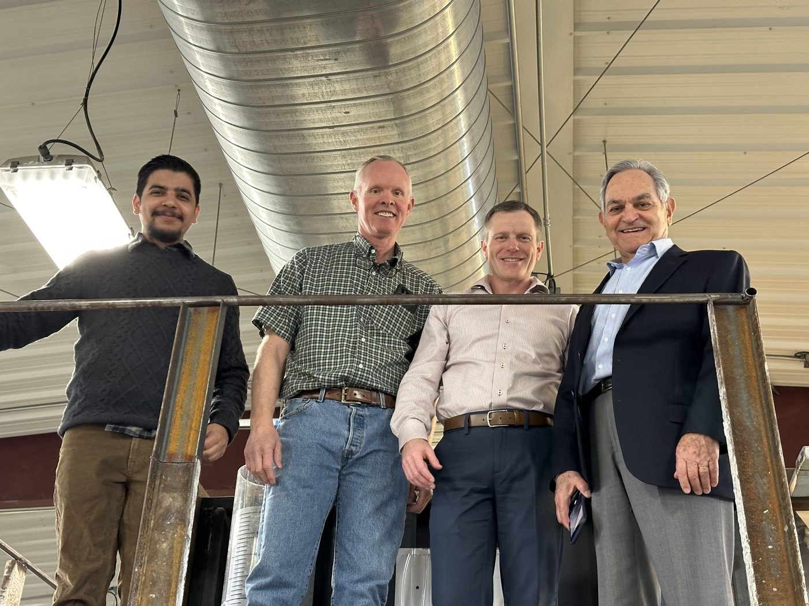
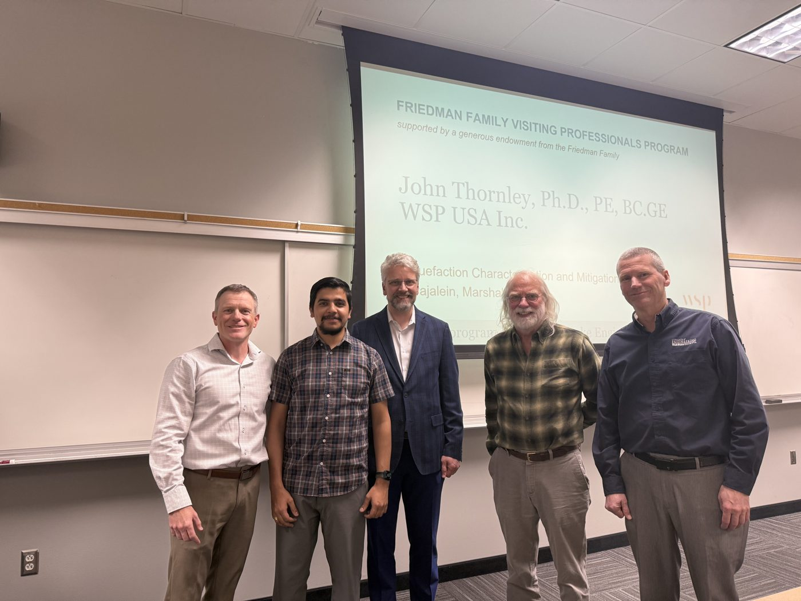

Visiting professionals · 2024 & 2025
Bringing practicing engineers to campus
Through EERI's Friedman Family Visiting Professionals Program, I organized two visits as chapter president:
- Dr. Faiz Makdisi (Gannett Fleming), March 2024: a lecture on the Oroville Dam spillways and tours of the Utah Water Research Laboratory and the SMASH Lab.
- Dr. John Thornley (WSP), March 2025: a lecture on liquefaction mitigation of coral sand in the Marshall Islands.